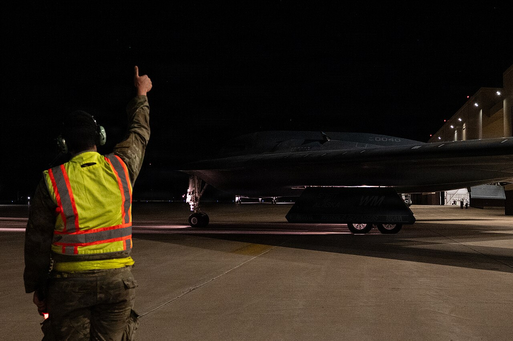

American Black Projects
Five decades of Skunk Works and USAF programs built on the same premise: fly higher, faster or stealthier than anything an adversary's radar could catch, and worry about telling the public later, if ever.

The Plane That Caused The UFO Panic
Still flying today. Seventy years after it flew above the missiles built to stop it.Built in secret by Lockheed's Skunk Works in roughly 88 days, the U-2 flew reconnaissance missions over the Soviet Union at altitudes nothing in the late 1950s could touch. Its polished silver skin, catching sunlight at 60,000–70,000 feet, is the CIA's own officially confirmed explanation for more than half of America's UFO reports in that era.

Flown By The CIA's Own Officers
Faster than the U-2's shadow could keep up with. Flown out of Area 51 itself.The Oxcart solved the problem the U-2 couldn't: speed. Built from titanium to survive the heat of sustained Mach 3+ flight, it was flown exclusively by CIA officers, not military pilots, operating directly out of Groom Lake. Its existence stayed classified until 2007 — more than four decades after it retired.

It Outran Missiles. We Retired It Anyway.
Mach 3.2, and its standard evasive maneuver against a missile was simply to accelerate.The Air Force's own successor to the Oxcart remains the fastest air-breathing crewed aircraft ever to fly operationally. No SR-71 was ever shot down despite thousands of missiles fired at them over the course of the Cold War. It was retired in 1998 — officially because satellites had caught up, though budget politics played a role too — leaving a reconnaissance gap that took decades to fully close.

Seven Years Of Combat, Zero Public Acknowledgment
The world's first operational stealth aircraft, built from flat angular panels computers of the era could actually calculate.Skunk Works built the F-117 around faceted, angular surfaces because the 1970s computing power available couldn't model curved stealth shapes — a limitation later solved by the smoother B-2. It flew real combat missions starting in the 1980s while the Pentagon still wouldn't confirm the aircraft existed, finally acknowledging it publicly in 1988.

A Flying Wing With A Billion-Dollar Price Tag
The most expensive aircraft ever built, priced at roughly its own weight in gold.The B-2 traces its stealth flying-wing shape back to Jack Northrop's own 1940s designs, finally made viable by 1980s composite materials and computing power the F-117 never had. Each of the 21 built cost over $2 billion, making it, by weight, one of the most expensive objects ever manufactured.